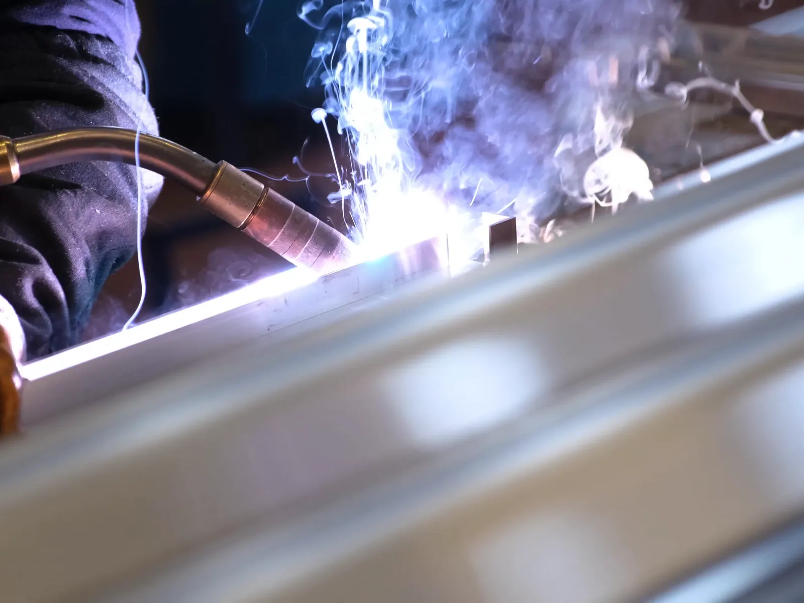

Home · Services
Mobile Welding and Metal Fabrication Services in New Orleans
At Big Easy Mobile Welders, we bring pipe, fence, gate, railing, window and arc welding, custom work and metal fabrication to your property, anywhere in the New Orleans area.

We come to the jobWhat Mobile Welding Services Do We Offer in New Orleans?
Our mobile welding covers pipe welding, fence welding, gate welding, iron railing welding, window welding and specialized mobile welding. Each service is done on site by licensed and insured welders, so the repair or new build happens right where the metal stands, at your home or business.

Pipe Welding
Pipe and pipeline repair on site, with stick and gas-shielded processes matched to the pipe.
View pipe welding →
Fence Welding
Fence repairs and custom fence fabrication, with the material and process chosen for your fence.
View fence welding →
Gate Welding
Gate repairs and custom gates in steel or aluminum, with materials and tools covered in your estimate.
View gate welding →
Iron Railing Welding
Custom indoor and outdoor railings for stairways, decks and balconies, built to fit your property.
View railing welding →
Specialized Mobile Welding
Repair work at your home or office and custom metal pieces, whatever the size of the project.
View specialized welding →
Window Welding
Repairs for rusted and worn metal window frames, carried out at your home.
View window welding →
What Arc Welding Services Do We Provide in New Orleans?
We provide shielded and non-shielded arc welding for commercial and residential customers. Stick welding, also called shielded metal arc welding, melts the electrode with heat from an electric arc, and its flux coating releases a shielding gas and forms a protective layer of slag over the weld.

Arc welding is one of the core processes we bring on site.
Choose the arc welding service that fits your project, or call us and we will recommend the right process for the metal and the job.

What Custom Welding Work Do We Do in New Orleans?
Our custom welding covers ironwork and one-off metal pieces built to your needs. We estimate each project before we start, so our welders arrive prepared with the right equipment. We also clean and prep the metal surfaces with brushes and grinders before any welding begins.
Estimated First
Every custom job starts with an estimate, so you know the plan and the cost up front.
Prepared on Arrival
Because we estimate before we start, our welders arrive with the right equipment.
Clean Surfaces
We clear dirt and debris from the metal with brushes and grinders so the weld holds.
Finished on Time
Coming prepared lets our team finish your project on schedule.
What Kind of Metal Fabrication Do We Do in New Orleans?
We fabricate all types of metal for residential, commercial and industrial settings. Our sheet metal fabricators support you at every stage, from the first inquiry to project completion, with fast turnaround of parts and the experience to meet high standards on every fabrication job we take on.

From a single bracket to a full frame, we build it and weld it on site when the job allows.
Work with our metal fabrication team for responsive support and cost-saving methods that keep your project moving.
Which Cities Around New Orleans Can Book Every One of Our Welding Services?
Every service on this page is available in New Orleans and 11 nearby cities: Metairie, Kenner, Gretna, St. Rose, LaPlace, Slidell, Mandeville, Covington, Madisonville, Hammond and Baton Rouge. Pick your city to see local details, or request a free estimate and we will confirm.
- New Orleans
- Metairie
- Kenner
- Gretna
- St. Rose
- LaPlace
- Slidell
- Mandeville
- Covington
- Madisonville
- Hammond
- Baton Rouge
Not sure we cover your street?
Request a free estimate or call us, and we will confirm before we book the job.
Where Our Rigs Roll
Schematic, not to scale. New Orleans and the 11 nearby cities we serve.
What Do People Ask About Welding Services in New Orleans?
Quick answers to common questions about our welding services, from arc welding and steel or aluminum gates to window frames, on-site pipe work and custom fabrication, plus how our free estimates work, so you can pick the right service before you call us.
What is the difference between mobile welding and arc welding?
Mobile welding describes where the work happens: on site at your home or business. Arc welding describes the process: an electric arc melts the metal to form the joint. Our mobile welders use arc welding, among other processes, right at your property.
Can you weld steel and aluminum gates?
Yes. Welded gates are typically made from steel or aluminum, and we handle gate repairs and custom gates in both. We supply the materials and tools the job needs, at no charge beyond the estimated cost.
Do you repair metal window frames?
Yes. Metal window frames fade, rust and blister over time in harsh weather. Our welders visit your home and repair the damaged parts, which is a cost-effective way to restore them.
Do you weld pipes on site?
Yes. We provide pipe welding and pipeline repair on site, using stick welding and gas-shielded processes matched to the pipe. Our welders bring the equipment to you, so the pipe never has to move to a shop.
Can you fabricate custom metal parts?
Yes. Our fabricators work with all types of metal for residential, commercial and industrial settings, with support from the first inquiry to project completion and fast turnaround of parts.
Is the estimate free?
Yes. Every service starts with a free, no-obligation estimate tailored to your project. Our pricing is transparent with no hidden fees, so you know what the job will cost before any work begins.


Book Your Free Mobile Welding Estimate
Tell us what needs welding, and we will bring the rig to your door anywhere in the New Orleans area.